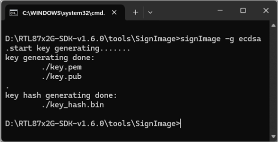
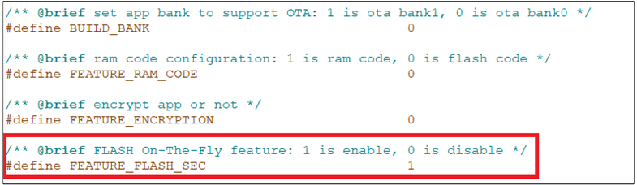
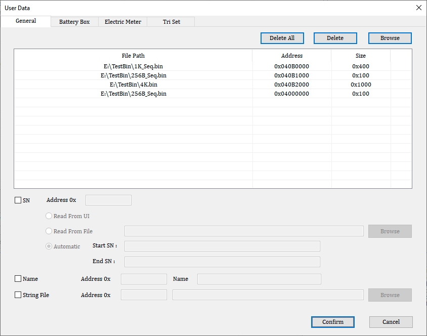
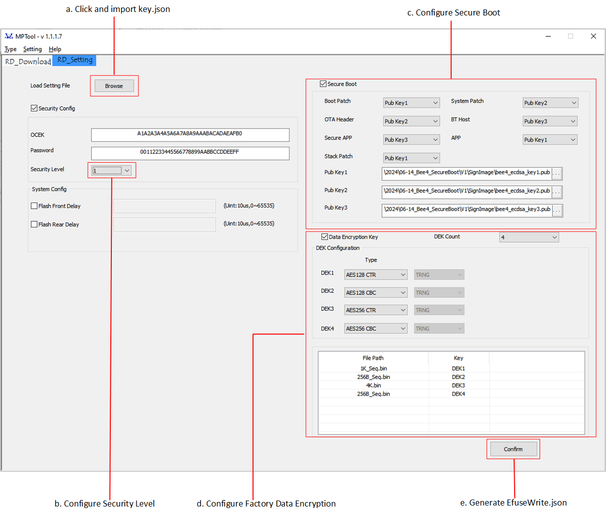
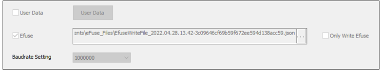
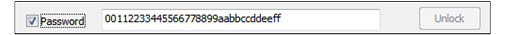

安全机制
本文介绍 RTL87x2G 芯片的安全机制以及使用方法，主要包括以下几部分：
安全启动：用于验证引导加载程序和固件的真实性和完整性，防止未经授权或恶意代码的执行。
Image 加密：用于对固件进行加密，确保固件的机密性和完整性，防止未经授权的访问和篡改。
Factory data 加密：用于对存储在设备内存中的敏感数据进行加密，如加密密钥或用户特定信息，从而减少数据泄露的风险。
eFuse 烧录：用于将关键信息，如密码或加密密钥，安全存储在硬件 eFuse 内存中，防止数据被提取或篡改，增强设备的安全性。
调试端口控制：限制对 SWD 接口的访问，通过密码机制只允许授权人员进行调试，防止未经授权的调试和潜在的漏洞。
总之，RTL87x2G 芯片的安全机制提供了综合和可靠的方法，以保护设备及其处理的数据的完整性、机密性和可靠性。
概述
主要从以下几个方面展开介绍：安全启动 、加密 Image 、加密 Factory Data、Key 安全存储、 SWD 接口控制 和 Password 调试。
安全启动
对于安全设备来说，执行固件的真实性校验，以保护设备免受恶意软件的攻击是至关重要的。安全启动嵌入在 RTL87x2G 系列的 ROM 中，并在默认情况下禁用。要启用它，需要通过 MP Tool 烧录相关的 eFuse。
安全启动用于确保 Image 的完整性和真实性，SHA256 用于完整性校验，ECDSA 用于真实性校验。如果任何 Image 的验证失败，芯片将重启，不会跳转到未经验证的 Image。
加密 Image
加密 Image 的方案是基于 Flash Security 开发的。APP Image 可以根据需求选择加密与否。
Flash Security （简称Flash-Sec），又称作 Flash on-the-fly，是一种能让 CPU 直接访问加密 flash数据的技术。其原理为，CPU在访问 Flash-Sec 加密过的数据时，会先通过 Flash-Sec 硬件模块解密该数据，再实际访问解密后的数据。
Flash-Sec 使用的是 AES 对称加密算法，加密模式为 CTR Mode，加密 key 的长度为 128 bit。Flash-Sec 至多支持配置 8 个 Flash-Sec Region 。其中，Patch image 默认使用 Region #0，App image 默认使用 Region 1。
备注
需要注意的是，每个 Region 的首地址必须 4KB 对齐。
在 IC 启动过程中，会对加密过的 image 进行 Flash-Sec 初始化（做 region 配置，key 设定等操作）。如果 key 没有烧录或者烧录的 key 和加密的 key 不匹配，都会导致 Flash-Sec 的解密失败。
加密 Factory Data
在生产设备的过程中，可能会生成一些与生产相关的信息，这些信息被称为 factory data（出厂数据）。其中一些 factory data 可能是具有安全敏感性的，比如用于设备认证的密钥对，即私钥和公钥。对于私钥等信息的保护至关重要。
因此，RTL87x2G 提供了一种保护 factory data 的机制，它会对这些数据进行加密并保存到 flash 中，并且根据设备上的差异化信息产生加解密密钥。在设备启动时，密钥会被安全执行环境加载到 AES 引擎中，使得应用程序能够在不直接接触密钥的情况下解密flash存储器上的factory data。
Key 安全存储
对于AES 对称加密算法，加密和解密用的是同一把 key ，长度为128bit ，所以需要特殊的机制来保护加密 key不 被泄露。加密 key 经过加密 Tool 加密一次得到 key’，key’ 再发布给工厂烧录到IC Flash中。
烧录的过程中，烧录 Tool 会对 key’ 解密得到原始的 key，同时会读取 IC 的 UUID 和 key 组合成 key’’ 并写入，以保证每块 IC 中烧录的 key（key’’）值都是不同的。这有助于增强加密过程的安全性并减小密钥泄漏的风险。
SWD 接口控制
SWD 接口作为重要的调试接口，对调试程序起了很大的作用。但是同样也会增加暴露程序数据和代码的风险。所以安全机制提供了控制 SWD 接口的方法。有3种控制方式：开，关和 Password 控制。其中 Password 控制表示需要通过 HCI UART 输入正确的 Password 才能打开，否则是关闭状态。
Password 调试
Password 和加密 key 类似，也是烧录在 IC 的 eFuse 中。如果某个功能是设定成 Password 控制，就需要通过 HCI UART 输入正确的 Password ，然后 IC 会自动重启并检查 Password 是否正确，如果正确则打开该功能。每次 IC 重启都需要重新输入 Password 才能打开该功能。
安全级别
RTL87x2G 提供 3 种 安全级别：0，1和2。数字越高安全级别越高，越高的安全级别可能会对调试或者重烧 eFuse 有影响。以下是不同的安全级别下各个模块的功能开关控制。量产建议设定为2级。
Security Level |
SWD Control |
eFuse Read |
eFuse Write |
|---|---|---|---|
0 |
Enable |
Enable |
Enable |
1 |
Enable by password |
Enable by password |
Enable |
2 |
Enable by password |
Enable by password |
Enable by password |
使用示例
使能安全启动
安全启动是一种确保设备在启动过程中进行固件真实性校验的机制，以保护设备免受恶意软件的攻击。具体方法是对固件进行 ECDSA 签名，并利用位于 ROM 中的安全启动代码及预先烧录至 eFuse 中的密钥等信息，在设备启动时进行签名验证。只有当所有固件都通过验证，设备才能正常启动。（如果设备没有安全启动的需求，可以跳过本节，不影响其余的安全机制。）
生成签名密钥
Realtek 提供了一款名为 signImage 的签名工具（位于 RTL87x2G SDK\tools\SignImage），该工具集成了密钥生成和固件签名功能。用户可以通过运行 signImage.exe --help 获取具体的使用方法。
生成密钥使用方法如下：
运行 signImage.exe -g ecdsa （其中参数 -g 代表生成密钥，ecdsa 代表密钥的类型），会生成以下三个文件：
key.pem（私钥）
key.pub（公钥）
key_hash.bin（公钥的 Hash 值，用于校验公钥）
使用 Sign 工具生成密钥对
不同的固件允许使用不同的密钥对（最多支持3组），因此可以参考以下脚本生成3组密钥对：
ken_gen.batset key_name=%1 signImage -g ecdsa del /f /q %key_name%.pem %key_name%.pub %key_name%_hash.bin ren key.pem %key_name%.pem ren key.pub %key_name%.pub ren key_hash.bin %key_name%_hash.bin
{kind=link}
调用
ken_gen.bat产生对应的密钥对：key_gen.bat ecdsa_key1 key_gen.bat ecdsa_key2 key_gen.bat ecdsa_key3
配置和烧录公钥
通过本章节，您将学习如何开启安全启动，配置签名密钥，并将其烧录到 IC 的 efuse 中。芯片在出厂时并未启用安全启动，因此可以运行未签名的固件。
警告
开启安全启动后，芯片将只能运行经过正确签名的固件。
在 MP Tool RD Setting 模式下，开启安全启动（选中 Secure Boot），并为不同的固件选择对应的公钥，如下图所示。
需要注意一下几点：
不同的固件可以使用相同的密钥。
固件必须使用对应的私钥进行签名。
eFuse 位只能从 1 烧成 0，不能从 0 烧成 1。一旦公钥被烧录，便无法修改。
对于没有使能 TrustZone 的项目（即没有 Secure APP 这个固件），仍需为 Secure APP 选择一把公钥。

配置安全启动
配置完成后，生成待烧录的 EfuseWrite.json 文件，Secure Boot 部分示例如下：
{
"secure_boot": {
"img_bootpatch_auth_key": 7,
"img_ota_auth_key": 3,
"img_securemcuapp_auth_key": 1,
"img_stackpatch_auth_key": 7,
"img_mcupatch_auth_key": 3,
"img_upperstack_auth_key": 1,
"img_mcuapp_auth_key": 7,
"sha256_pub_auth_key1": "4337aa9d48dfd1051bcb657f9657df289f470eb3b316b2ca9dd5e1bc6752cb817689",
"sha256_pub_auth_key2": "74ccecda5d4f8a0377731abba00c8fdeb046bad4802f90218e95e96524f5e108857a",
"sha256_pub_auth_key3": "36df987ab627ba7eb3ee359770da34f02b2ea55dfe3f809b47a7e98149e50970758a"
}
}
其中 sha256_pub_auth_key 的值应该和 生成签名密钥 中生成的 key_hash.bin 中的值一致。
烧录 efuse.json 文件请参考 烧录 eFuse 。
固件签名
Boot Patch、OTA Header、Secure APP（如果未开启 TrustZone，则不包括此文件）、Stack Patch、System Patch、BT Host 和 APP 这些文件都需要进行签名。签名过程依然使用 生成签名密钥 中提到的签名工具（signImage）。以下是示例命令及参数说明：
E:\SignImage>signImage -b 15 -r ecdsa_key1.pem -c sha256 -p boot_patch_MP_master_1.0.206.0_b63c04e5-2f64fa643c242428e6f914c61b2d77ff.bin
sign image done:
boot_patch_MP_master_1.0.206.0_b63c04e5-861a8611119fa1aad25746d268ba0e05.bin
-b 15 : 表示芯片类型：RTL87x2G
-r ecdsa_key1.pem : 指定私钥文件（请替换为实际的私钥文件）
-c sha256 : 对固件进行 SHA256 校验
-p :file:`***.bin : 待签名的固件文件（请替换为实际的固件文件）
签名后的固件烧录方式与未签名的固件相同。
备注
注意：一旦启用安全启动，Flash 布局中 OTA Bank 内每个大小不为0的文件都必须烧录，即使某些数据文件无需签名，否则芯片将无法正常启动。例如，在 Flash 布局（参见工程的 flash_map.h 文件）中，如果 APP Config File 设置了 4KB 的大小，则必须烧录此文件。
配置加密 Key
编辑 tools\keys\key.json 文件，配置 OCEK 和 PASSWORD 。该文件里的 OCEK 和 PASSWORD 是明文，需要注意保护该文件。在请 Realtek 做 IC 不良分析时，需要提供此处的明文 PASSWORD。
{
"OCEK": "a1a2a3a4a5a6a7a8a9aaabacadaeafb0",
"PASSWORD": "00112233445566778899aabbccddeeff"
}
生成加密 APP Image
要生成 Flash-Sec 加密的 APP image，需要做以下修改。
打开 Flash-Sec 加密 APP 的宏，将宏
FEATURE_FLASH_SEC设定为 1。默认设定是 0，表示非加密。
{kind=link}

打开 Flash-Sec 加密 APP 的宏
Keil工程：修改
after_build_common.bat文件，确保将 --aesmode CTR 加在prepend_header命令的末尾。

after_build_common.bat修改
GCC工程：修改
Makefile文件，确保将 --aesmode CTR 加在prepend_header命令的末尾。
加密 Factory Data
MP Tool 自 1.1.1.7 版开始支持加密 Factory Data 。Factory Data 加密采用 AES128 或 256 算法，支持 CBC、CTR 两种模式。加密 Factory Data 的 Key 被称为 DEK（Data Encryption Key），最多支持 4 把。Factory Data 以 User Data 的形式存储，User Data 文件本身不包含地址信息，需要在 MP Tool 手动配置地址。
MP Tool 在烧录多个 Factory Data 的时候，需要知道每个 Factory Data 的烧录地址，以及采用了哪一把 DEK 。这些信息可通过 MP Tool RD 模式配置，最终记录在 EfuseWrite.json 文件中。该文件原本用来描述待烧录的 eFuse 信息，此处也被用作描述 DEK 信息以及 User Data 信息（包含 DEK 选择，User Data 地址及文件长度等）。 目前只有量产模式支持烧录该文件，所以加密 Factory Data 需要做到打包文件里，在量产模式和 EfuseWrite.json 一起烧录。（如果设备没有加密 Factory Data 的需求，可以跳过本节，不影响其余的安全机制。）
配置 Factory Data 及 DEK
首先需要在 User Data 对话框配置待加密的 Factory Data。
当前可加密的 Factory Data 文件个数：软件没有此限制，仅受限于 Flash 容量。
DEK 存储在 Flash 第一个 Sector 的 3072 字节处，地址为0x4000C00。如果把 Factory Data 放到第一个 Sector，最大不能超过 3072 字节。
最大支持的 Factory Data 大小为 16K 字节。
{kind=link}

配置待加密的 Factory Data
点击 Confirm 按钮之后转到 RD Seting 继续配置 DEK。

配置 DEK
参考 烧录 eFuse 章节烧录
EfuseWrite.json。使用 Pack Tool 打包待烧录 Image 及 Factory Data。
APP 用法
APP 中包含头文件 aes_api.h，使用如下 API 来执行加解密操作。CBC 模式要求 Factory Data 长度为 16 的整数倍，CTR 模式没有限制。
crypto_err_t aes128_ctr_encrypt_with_load_key(const unsigned char *input, uint8_t key_material_id, unsigned char *output, uint32_t data_len);
crypto_err_t aes128_ctr_decrypt_with_load_key(const unsigned char *input, uint8_t key_material_id, unsigned char *output, uint32_t data_len);
crypto_err_t aes256_ctr_encrypt_with_load_key(const unsigned char *input, uint8_t key_material_id, unsigned char *output, uint32_t data_len);
crypto_err_t aes256_ctr_decrypt_with_load_key(const unsigned char *input, uint8_t key_material_id, unsigned char *output, uint32_t data_len);
crypto_err_t aes128_cbc_encrypt_with_load_key(const unsigned char *input, uint8_t key_material_id, unsigned char *output, uint32_t data_len);
crypto_err_t aes128_cbc_decrypt_with_load_key(const unsigned char *input, uint8_t key_material_id, unsigned char *output, uint32_t data_len);
crypto_err_t aes256_cbc_encrypt_with_load_key(const unsigned char *input, uint8_t key_material_id, unsigned char *output, uint32_t data_len);
crypto_err_t aes256_cbc_decrypt_with_load_key(const unsigned char *input, uint8_t key_material_id, unsigned char *output, uint32_t data_len);
烧录 eFuse
备注
RTL87x2G 烧录 eFuse 时已取消2.5V ± 10%限制，只要芯片正常供电即可烧写 eFuse。
- RD 端配置 生成用于烧录的 eFuse 文件。首先确保 MP Tool 处于调试模式：可通过 MP Tool 选择 进入。

生成用于烧录的 eFuse 文件
在 RD Setting 页面，点击 Browse 按钮导入
key.json文件。选择项使用的 Security Level。
如果要使能安全启动，请参考 配置和烧录公钥 配置安全启动。
如果要加密 Factory Data，请参考 配置 Factory Data 及 DEK 配置 Factory Data。
点击 Confirm 按钮，生成
EfuseWrite.json，该文件可以提供给工厂烧录。
- 工厂端烧录 eFuse首先确保 MP Tool 处于量产模式：可通过 MP Tool 选择 进入。

选择 eFuse 烧录文件
在 MP Setting 页面勾选 Efuse，并选择 eFuse 烧录文件。
点击 进行烧录。
{kind=link}
{kind=link}
通过 Password 调试
为了安全起见，当安全级别设置为1或2时，SWD 接口会被禁用。然而，开发人员可以使用密码调试功能重新激活 SWD 接口。这允许授权的开发人员在保持系统整体安全性的同时，重新获取对 SWD 接口的访问权限，以进行调试目的。

使用 Password 解锁SWD
步骤如下：
在调试模式 RD Download 界面打开串口。
选择 Password 。
输入
key.json文件中的原始明文 PASSWORD。点击 Unlock 按钮。
之后 IC 会重启。
重启之后 SWD 便被打开。
See Also
相关 API Reference 请查看：